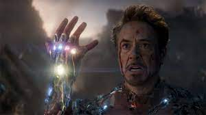
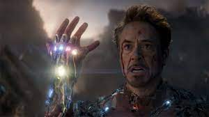

Avengers Infinity War
Özet:
"Avengers Infinity War"un ardından pek çok süper kahraman küle dönüşmüştür. Doktor Strange, Gamora, Drax, Mantis, genç Örümcek Adam, Black Panther, Bucky Barnes, Groot, Scarlet Witch, Vision, Star Lord, Maria Hill, The Wasp ve Nick Fury gibi pek çok kahraman, Thanos'un Sonsuzluk Eldiveni'ni ele geçirmesi ve kendi dengesini kurması yüzünden yok olmuştur ve dünya umutsuz haldedir. Dünya üzerinde kalan> Black Widow, Kaptan Amerika, Thor ve Hulk kendi yaslarını tutmaktayken, Iron ve Nebula ise kontrol edemedikleri bir uzay gemisinin içinde, uzay boşluğunda sürüklenmektedirler. Süper kahramanlar takımı için işler pek de iyi görünmemektedir. Ancak Kuantum Bölgesi'nden çıkmanın bir yolunu bularak Avengers ekibinin kalan üyelerine giden Ant-Man, yeni bir umut ışığı olacaktır. Daha önce var olduğunu bilmedikleri bölgeler, kahramanlar ve evrenlerin varlığını öğrenen ekip, Thanos'un kurduğu bu çarpık dengeyi değiştirmek ve kendilerinden alınanı geri getirmek için hayatlarının en büyük mücadelesine girişeceklerdir. Hepsi kişisel olarak önem verdikleri şeyleri kaybetmiş olan kahramanlarımız için intikam vakti gelmiştir.
.jpg)
.jpg)
.jpg) 


Robert Downey Jr (IRONMAN)
4 Nisan 1965 New York, Manhattan doğumlu olan Robert Downey Jr. Yahudi asıllı bir aileden gelmektedir. Genç yaşta tanıştığı uyuşturucu nedeniyle devam ettiği hiçbir okulu tamamlayamayan Downey Jr.’ın şansı sinema ve televizyonda döner. Çeşitli filmlerde rol aldıktan sonra Saturday Night Live ekibinde yıldızı parlar. Tuff Turf (1985), Tuhaf Bilim (1985) ve True Believer (1989) gibi filmlerinin ardından esas patlamasını ise Oscar’a aday gösterildiği Chaplin filmiyle yapar. 90’lı ve 2000’li yıllarda rol aldığı yapımların yanı sıra tekrarlayan uyuşturucu bağımlılığı ile de gündemden düşmeyen Robert Downey Jr. 2008’de Tropic Thunder ile bir kez daha Oscar’a aday gösterilir. Aynı yıl yeniden başlayan Iron Man serisi ile sahalara geri döndüğünü kanıtlayan Robert Downey Jr. kariyerinin bu ikinci döneminde kelimenin tam.
Josh Brolin (THANOS)
Josh Brolin (d. 12 Şubat 1968), Amerikalı film ve televizyon oyuncusudur. Oyuncu James Brolin'in oğludur. 1988-1992 yılları arasında Alice Adair ile, 2004-2013 yılları arasında ise Diane Lane ile evli kalmıştır. 2016'dan bu yana Kathryn Boyd ile evlidir.